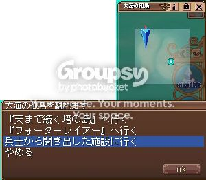
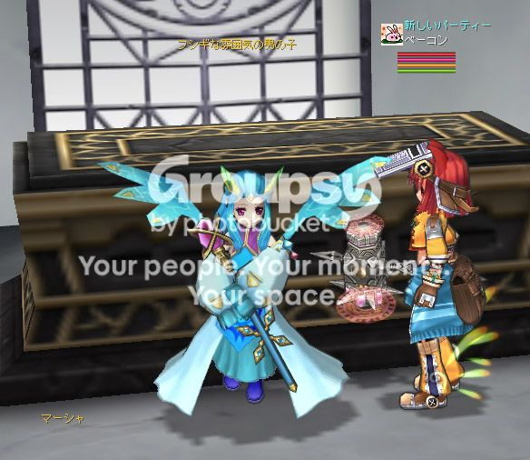
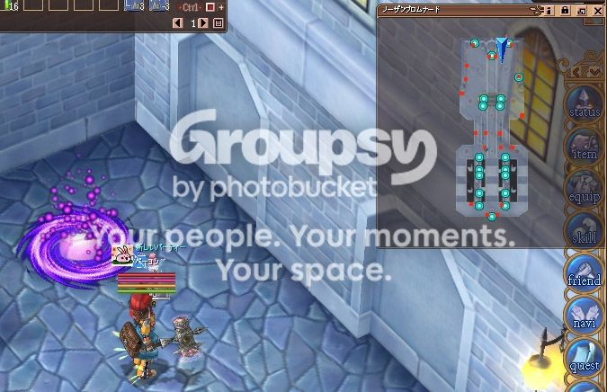
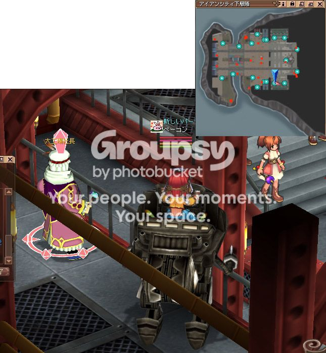
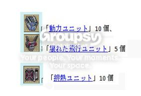

Creditในการจัดทำไกด์นี้: http://ec.gamedb.info/wiki/Event.html, Akatachi, อายจัง, icemocha และอีกหลายท่านในปาลริงโกที่ไม่ได้เอ่ยชื่อ
เงื่อนไขในการทำซาก้า 12 :
- ต้องผ่านเควสซาก้า 8 - 11 มาก่อน เพราะเป็นเควสนี้เป็นเควสที่จะทำได้หลังจบซาก้า 11
- แนะนำให้เป็นคลาสสองเลเวลสูงๆ หรือโครนิเคิลเลเวล 50 ขึ้นไป หรือชวนเพื่อนที่เลเวลสูงๆ มาช่วยกันทำ เพราะบางสถานที่ที่ต้องเข้าไปหาของนั้นมอนสเตอร์เลเวลสูงและรุมเยอะพอสมควร
Part 1
1. เริ่มต้นที่ エル・シエル（上層） (เมืองไททาเนียชั้นบน) หลังจบซาก้า 11 นั้นเราจะยืนอยู่หน้ายามที่เฝ้าหอคอย ให้คุยกับเขา

2. เขาจะให้เราไปหา ふわふわ肉 (เนื้อนุ่มๆ 10 ชิ้น), からふるきのこ (เห็ดแดง 5 ชิ้น) ซึ่งหาได้ที่แมปอโครเนียนอกเมืองไททาเนีย โดยการตีเจ้าหมูบอลลูน バルーンピッグー และเห็ดแดง マタンガ โอกาสดรอปไม่ได้ยากมากมายนัก ตีเรื่อยๆ เหนื่อยก็แช่น้ำตรงหาดเล่นๆ ฟังเพลงเมืองสวรรค์ (สำหรับใครที่ไม่ได้จบซาก้า 11 ปุ๊ป ทำ 12 ต่อปั๊ป ก่อนเข้าไปคุยกับลุงยามบนเมืองไททาเนียก็ตีหมูบอลลูนกับเห็ดแดงไว้ล่วงหน้าเลยจะเป็นการดีครับ) (หากได้ขนนุ่มๆ ふわふわの綿 และเห็ดดำ 胞子袋 มาด้วยก็ขอให้เก็บเอาไว้อย่างละ 10 ชิ้นก่อนเลยเพราะเราต้องนำไปใช้ในพาร์ท 2 ด้วย)

3. ได้ของครบแล้วก็กลับไปส่งให้ลุงยามคนเดิม คุยเสร็จแล้วให้กลับไปยังแมป 大海の孤島 ที่เรานั่งเรือมากับพวกอีมิล
ในซาก้า 11 เข้าวาปตรงพื้นน้ำแล้วเลือกข้อ 3

4. คุยกับแกงค์อีมิล แล้วเราจะถูกวาปไปอีกห้อง จะได้พบมังกรไททาเนีย ให้เราคุยกับเธอ เธอจะให้เราไปเมืองเหนือ

5. ไปเมืองเหนือ ตรงจุดวาปด้านบนตามลูกศร เพื่อเข้าไปยัง Ancient Arc เลือกล็อบบี้ไหนก็ได้ตามใจเรา

6. มองหา NPC イライラする男 ที่ยืนกุมหัวอยู่ ให้เข้าไปคุยกับเขา แล้วเขาจะไล่เราไปเมืองใต้ แต่ก่อนไปอย่าลืมพกดินปืน
黒色火薬 10 ชิ้นไปด้วยล่ะ (เอาล่ะ เริ่มรู้สึกถึงการเดินทางนรกแตกหรือยัง)

7. เมืองใต้ ไอออนเซาท์ ให้เดินทางไปที่ดันเหมืองชั้น 3 ไปคุยกับทาทาอาเบะ(อ๊างงงงง) ที่กำลังขุดกระทู้ เอ้ย ขุดหินอยู่
คุยจนกว่าเขาจะรับดินปืนจากเรา

8. กลับไปเมืองไอออนเซาท์ ที่ห้องตีบวก คุยกับพ่อค้าอาหรับที่ยืนอยู่ชั้นบน และคุยกับแกงค์อีมิลที่โผล่มาชั้นล่างตามลำดับ
เขาจะให้เราไปโลกโดมิเนียน ไปหาอะไหล่มาซ่อมเรือบิน

9. มาถึงโลกโดมิเนียนแล้ว แนะนำให้ลงท่อก่อน ไปตีเดมช้าง และเดมอื่นๆ เอา 動力ユニット 10 ชิ้น、排熱ユニット 10 ชิ้น、
壊れた飛行ユニット 5 ชิ้น มา และถ้าระหว่างทางลงท่อมาเจอมังกรก็ให้ตีเพื่อหาครีบมังกร 水竜のヒレ 5 ชิ้น เอาไว้ล่วงหน้าด้วย

10. West Fort โลกโดมิเนียน เข้าเมืองมาแล้วเลี้ยวซ้าย คุยกับ スナブ จะโดนวาปเข้าห้องแลปไป คุยจนกระทั่งถูกถีบออกมา เขาจะให้เราไปหา 動力ユニット 10 ชิ้น、排熱ユニット 10 ชิ้น、壊れた飛行ユニット 5 ชิ้น แต่เนื่องจากเราเตรียมมาแล้ว
(เราเมพ) ก็ให้กลับเข้าไปคุยจนกว่าเขาจะรับของไปแล้วไล่เราออกมาอีกรอบ (อ้าว...)

11. กลับไปยังห้องมังกรไททาเนียแล้วคุยกับเธออีกครั้ง
12. กลับไปห้องตีบวกที่เมืองใต้อีกครั้ง เจรจากับลุงพ่อค้าอาหรับอีกครั้งจนกว่าแกจะยอมยกบ่อน้ำมันให้ฟรีๆ เอ้ย วาปเราไปยัง
เรือบินริง (ที่เราช่วยหาของมาซ่อม) คุยกับอีมิล เป็นอันจบซาก้า 12 Part 1

ยัง... การเดินทางโหดหินไปยังสามโลกยังไม่จบแค่นี้